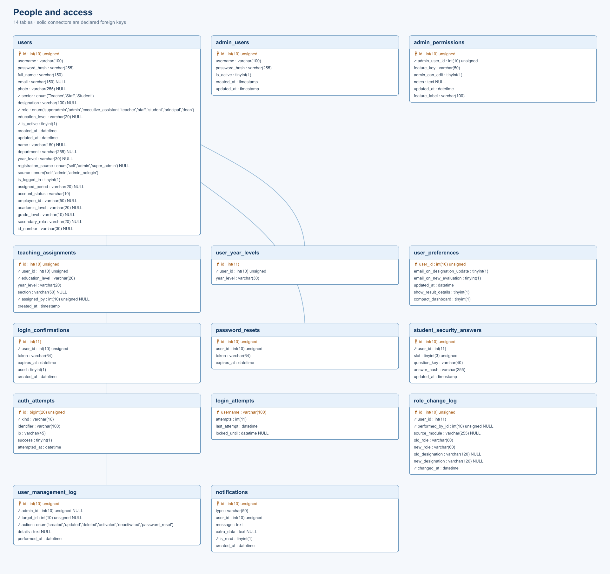
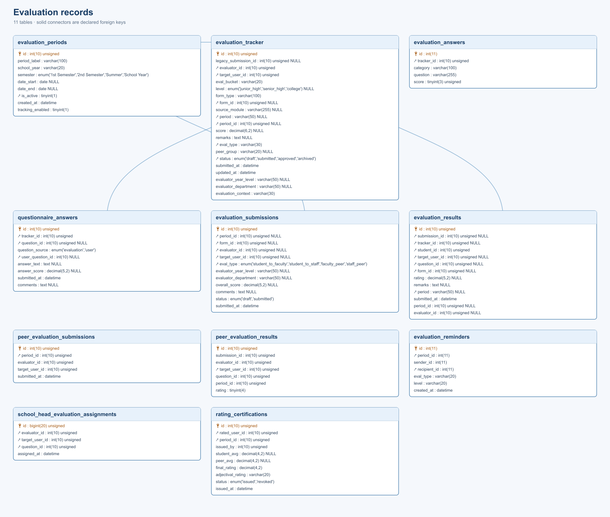
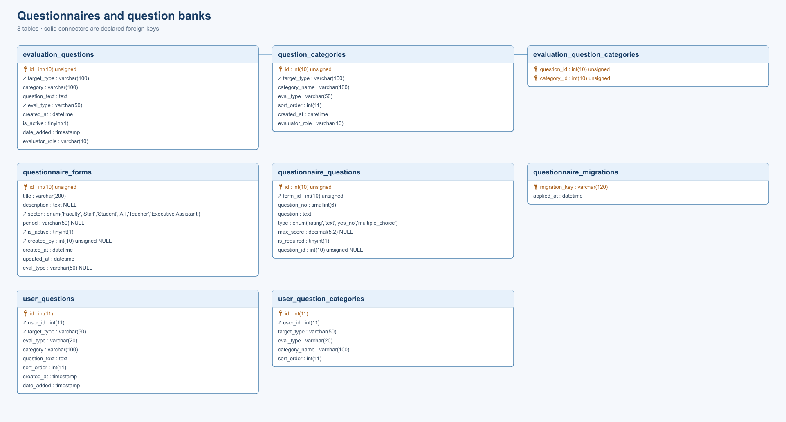
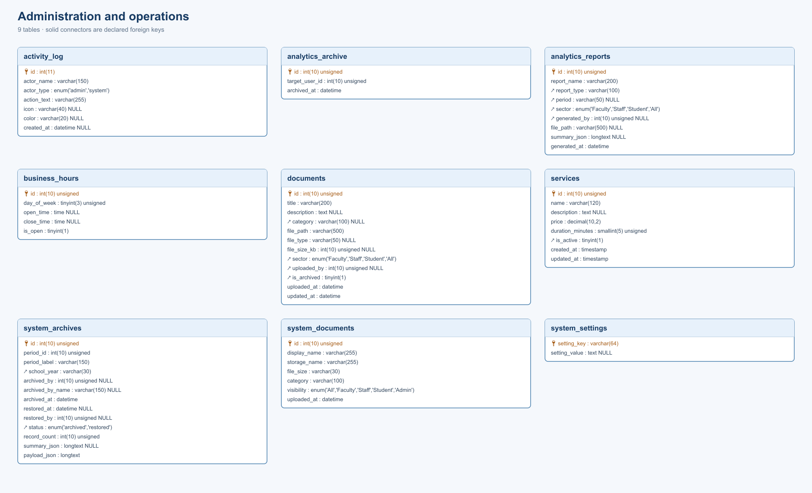

The current 42-table database is split into four diagrams so each workflow stays readable. Primary keys are highlighted; arrows show foreign keys declared in the live database.
Accounts, roles, user context, authentication, permissions, and notifications.
Open PNG image · Open vector SVG
Periods, submissions, trackers, answers, reminders, results, and ratings.
Open PNG image · Open vector SVG
Questionnaire forms, shared and user question banks, categories, and question mappings.
Open PNG image · Open vector SVG
Archives, settings, documents, reports, activity logs, and remaining service configuration.
Open PNG image · Open vector SVG
These declared relationships connect tables shown in different diagrams.
evaluation_tracker.evaluator_id and target_user_id; evaluation_submissions.evaluator_id and target_user_id; evaluation_results.target_user_id.questionnaire_forms.created_by.analytics_reports.generated_by and documents.uploaded_by.evaluation_tracker.form_id, evaluation_submissions.form_id, evaluation_results.form_id and question_id, and questionnaire_answers.user_question_id.evaluation_results.target_user_id, plus evaluator and target references listed above.Diagram connectors show only foreign keys declared by MySQL. Application-level references without a declared constraint, such as some reminder and certification IDs, are not drawn as enforced relationships.